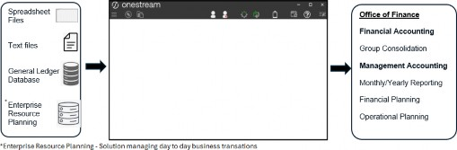
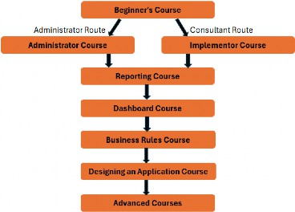
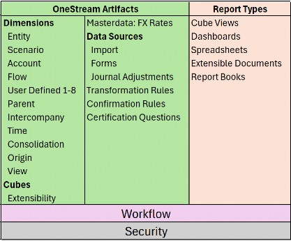
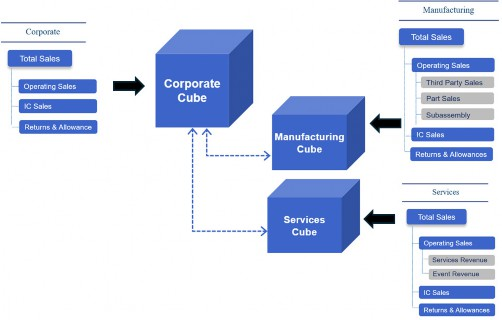

Introduction Become One with OneStream
Introduction Become One with OneStream
Why Learn OneStream?
Why should you learn OneStream? Well, as a corporate performance management solution (CPM), also known as an enterprise performance management (EPM) solution, incorporating consolidation, planning, and reporting, used by more than 1,500 organizations (and counting) and top-rated by technology research companies… why wouldn’t you?
At the time of writing, your author had embarked on the OneStream learning journey just six months previously and already feels confident enough to write a book about it. That’s got to be a testament to the platform and how easy upskilling is, right? (Or you’re thinking, wow, that must be some clever author… hey, no argument here!) But seriously, the founders set out to encapsulate disparate CPM products and create a world-beating all-in-one platform. Now the vision and knowledge started by them is spreading globally.
Learning OneStream involves understanding its terminology, architecture, use cases, and intelligence. This will be part of a new learner’s roadmap.
If you are new to corporate performance management, then let’s begin here.
Introduction Become One with OneStream
What is Corporate Performance Management?
All organizations have goals (e.g., revenue, profits, customer numbers, etc.), and getting there takes hundreds if not thousands of transactions on a weekly, monthly, or longer basis. This amounts to a lot of data consisting of manual (e.g., spreadsheet or text) files, possibly databases, and – for larger organizations – enterprise resource planning (ERP) solutions. This data then needs to be collated and turned into information for various teams to use and make decisions on, and this is where OneStream steps in.
Corporate performance management has become an integral part of the Office of Finance and beyond in an organization, where everyone from the operational teams right up to the C-suite relies on up-to-date real-time information to know what’s happened in the past, work efficiently in the present, and plan with ease for the future.
The OneStream platform handles the organization’s evolving requirements and is often the single source of truth for finance and operations. Its capabilities extend to being able to add additional use case functions and build new solutions directly on the platform.
For an end-user, a workflow (a sequence of processes through which work passes) acts as the platform’s backbone. The workflow brings together all the built artifacts in a user-friendly manner, tailoring each user’s role and tasks. These tasks might include importing, entering, adjusting, and reviewing data, and the results might be presented in bespoke reports and dashboards.
Dashboards can also quite easily be designed to be the user’s home page. This will then be the front-end portal that is set up to guide them through a workflow or other dashboard reports.
Introduction Become One with OneStream
OneStream and the Office of Finance
The Office of Finance, which consists of financial and management accounting, is responsible for the organization’s statutory and management reporting. For a group, this could be a consolidation of all its entities (foreign exchange translations, ownership and minority interest calculations, intercompany eliminations, group currency reporting, and more).
Other aspects could be the monthly cadence of various reporting needs, as well as monthly and quarterly close activities. This entails collating reliable information from around the organization’s functional or budget managers.
The Office of Finance also sets the yearly budgets, plus long-term plans that are monitored and reported for any deviations.
The output to a lot of this is financial statements, (income statement, balance sheet, cash flow), supplemental accounts (which provide context to the statements), and supporting commentary.

Figure 1.1
OneStream can be the driving force for all this and, after being implemented, could be owned by the Office of Finance, or by a Systems support function in the organization. The platform will play its part in various roles and be managed by a dedicated administrator.
The administrator will support the ongoing business changes required in OneStream, understand the processes (from data integration input to end user output), and collaborate with key stakeholders such as the financial controller, tax and treasury professionals, and auditors.
The skillset of a OneStream administrator can be varied but will center around an interest in systems, a basic understanding of accounting concepts and project management, a fondness for troubleshooting, and an understanding of the evolving business.
For an implementer of OneStream, the skillsets are similar to those of an administrator, with a further emphasis on what each project phase entails. Broadly speaking, they must have the acumen to be able to:
Analyze the organization’s current eco-system and requirements
Translate findings and Design structures for the eventual Build into OneStream
Be part of the Test team to get to the sign-off stage
Roll out a version of OneStream that the administrator within the organization takes over and maintains
Introduction Become One with OneStream
Where Does OneStream Knowledge Come From?
At OneStream, there has been a lot of investment to form a best-in-class Global Education Services (GES) team with the skills to turn product development and ongoing work into quality learning and training material. The courses created range from complete beginner to skilled OneStream user, and can delve into specialized topics.
The OneStream product development group will initially have a team working on technical education writing, which will be the basis of a course. Then the global education services content developers and learning experience designers create world-class training that can be taken on-demand or delivered by one of the expert instructors in a classroom or virtually. There are also micro-courses, podcasts, and published books.
There are many resources available, so where’s the best place to start learning about OneStream?

Figure 1.2
As a starting point, the OneStream website training page has a good roadmap of which courses build upon each other, as well as the process of signing up for a classroom or buying an on-demand course.
The learning management system (LMS), known as Navigator, is the one-stop-shop training portal. It contains premium and micro courses, quick tips, videos, tech talks and podcasts, and platform release notes.
For the ‘go-getters’, OneStream has official certification exams to test your knowledge and obtain credentials in different areas of expertise. There are various exams targeting administrators, implementers, lead architects, and end-users.
Guidance and preparation for these can also be found on Navigator.
OneStream’s dedicated forum site, OneStream Community, has a network of experts keen to interact. The forums are categorized by knowledge area, together with blogs, technical documents, and user groups. You’re never alone while learning!
Introduction Become One with OneStream
What Role Should Do Which Course?
The following chapters will discuss various components of OneStream (commonly known as artifacts) that are put together to form tasks for various team members in an organization. Each team member has a generic role related to OneStream (their actual job titles may be organization-specific) and takes the form of:
In-house Project Manager
In-house Developer
Administrator
Report Writer (can also be referred to as a Super User)
Subject Matter Expert (SME)
Let’s look at each role and the tasks the role performs to determine which type of course is suitable.
Introduction Become One with OneStream › What Role Should Do Which Course?
Project Manager
As part of the OneStream implementation project, the project manager (also possibly known as the Scrum master) will be responsible for:
Keeping in line with the statement of work (SOW)
Assisting with organizational requirements
Resourcing the project
Organizing the sprints of the project phases
Managing daily and monthly project team meetings
Project troubleshooting/escalation management
The OneStream knowledge required at this level would consist of an understanding of terminology and concepts used, OneStream’s high-level functionality, extended use cases with which the OneStream project team can enhance the platform, and an understanding of courses available for future team members to attend.
The courses suitable for the project manager would be:
OneStream Beginners course
Additional self-service micro courses, such as tech talks or quick tips, platform release videos, and OneStream community forums.
Introduction Become One with OneStream › What Role Should Do Which Course?
Developer
Developers can be seen as product owners who are responsible for making sure the OneStream application performs optimally. They focus on the design and build of a OneStream application. Tasks include, but are not limited to:
Understanding the organization’s requirements
Comprehending OneStream’s data integration inputs
Metadata build
Rule writing
Applying security settings
Working with administrator(s) on enhancements and platform updates, with the ability to foresee any impacts on performance
The OneStream knowledge required focuses on understanding how source systems can be integrated with OneStream, building artifacts, writing business rules, and testing the application.
The courses suitable for the developer would be:
Implementer course
Business Rules course
Security micro course
Reporting course
Dashboard course
Further micro courses on specific use cases are also applicable, such as Account Reconciliations and Integrator Connector.
After the courses, implementation certification can be taken.
Introduction Become One with OneStream › What Role Should Do Which Course?
Administrator
As the day-to-day overseer of OneStream, the administrator’s role will have a lot of overlap with the developer’s role and will also be responsible for:
Maintenance
End-user training
Collaborating with the developer on enhancements
Data integration
Data quality control and application integrity
Process checks and improvements
Auditor requirements gathering
Report writing
The OneStream knowledge required is quite extensive and administrators are considered experts or go-tos for all things OneStream.
The courses suitable for the administrator would be:
Beginners course
Administrator course
Security micro course
Reporting course
Dashboard course
Advanced courses on BI Blend, connectors, and application design
Become One with OneStream After the courses, administration certification can be taken.
Introduction Become One with OneStream › What Role Should Do Which Course?
Report Writer
The report writer (or super user if the role is not just limited to writing reports) manages the user base and executive board pack and is responsible for:
Building and maintaining reports
Data analysis
Workflow updates
Internal reporting
External reporting
Verification of data
The OneStream knowledge required is an overview of terminology and concepts and a detailed understanding of OneStream report outputs.
The courses suitable for a report writer would be:
Beginners course
Reporting course
Dashboard course
Advanced dashboard course
Introduction Become One with OneStream › What Role Should Do Which Course?
Subject Matter Expert (SME)
The SME is knowledgeable about the organization’s business processes and works closely with all the above roles regarding requirements. SMEs are responsible for:
Assisting with the design requirements for OneStream
OneStream troubleshooting
Assisting with OneStream user training
May have an input concerning any business needs that require a change in OneStream
The OneStream knowledge required will consist of terminology and concepts as well as ad hoc topics (as and when required).
The courses suitable for the SME would be:
Beginners course
Reporting course
OneStream podcasts
OneStream community
Micro courses
The roles above, and the numbers of people in each role, depend on the size of the organization. The administrator can be one team member, but for some organizations (e.g., those that insist on the segregation of duties) with SaaS offerings, this can be split into two; one being the application administrator responsible for the OneStream Application use case (as much of the OneStream environment is required for their role); and the other being the system administrator, responsible for other OneStream Environment jobs where security tasks could be a large part of their daily activities.
Introduction Become One with OneStream
Other OneStream Resources to Extend Your Knowledge
OneStream regularly updates the platform. To keep up with the changes, and add to your knowledge, there are platform release micro courses nicely laid out to work through the added features.
There is also a Design and Reference Guide as OneStream’s main help resource. It has detailed explanations about the platform’s features.
Solution Exchange is the go-to for OneStream platform expansion. Containing many solutions and blueprints created by OneStream, partners of OneStream, or the open community, it consists of downloadable applications and templates that can be easily uploaded onto the OneStream platform.
OneStream’s support site has a large knowledge base where users can browse and search various articles and guides.
Introduction Become One with OneStream
OneStream Artifacts
As mentioned earlier, there is a logic and flow to learning OneStream, and one perspective is that of a jigsaw puzzle. The box cover has the whole picture so you can see the result then, once opened, you can lay out all the pieces on the table and study each individual tile to understand where that piece fits in the bigger picture.
Here is OneStream’s front cover of some of the artifacts:

Figure 1.3 Here are the main pieces now laid out on the table:
Introduction Become One with OneStream › OneStream Artifacts
Dimensions
Classed as metadata, these are a set of related members. Each member in a dimension is an item name that labels, so to speak, the data it represents. So, if our dimension has been called Fruit, the members inside it could be named Oranges, Apples, Grapes, and Peaches, and the data for each item could point to unit sales. Dimensions are built per dimension type as follows:
Introduction Become One with OneStream › OneStream Artifacts › Dimensions
Entity Dimension
The organization’s business areas used for statutory or management reporting.
Introduction Become One with OneStream › OneStream Artifacts › Dimensions
Scenario Dimension
A version of data that can reflect various Scenario Types such as Actual, Budget, or Forecast.
Introduction Become One with OneStream › OneStream Artifacts › Dimensions
Account Dimension
The structure representing the organization’s chart of accounts, both financial and non-financial members.
Introduction Become One with OneStream › OneStream Artifacts › Dimensions
Flow Dimension
Set up to provide the movements and details on how account values change over time.
Introduction Become One with OneStream › OneStream Artifacts › Dimensions
User Defined (UD) Dimension
The ability to create hierarchies that can be used to analyze a report further, such as products, regions, or cost centers.
Introduction Become One with OneStream › OneStream Artifacts › Dimensions
Parent
Resides within the Entity dimension and provides the mechanism to further break down an entity’s business area.
Introduction Become One with OneStream › OneStream Artifacts › Dimensions
Intercompany
Determines which entities within the Entity dimension trade in the group and are involved with intercompany activity.
Introduction Become One with OneStream › OneStream Artifacts › Dimensions
Time Dimension
Data can be stored and reported at weekly, monthly, quarterly, half-yearly, and yearly levels.
Introduction Become One with OneStream › OneStream Artifacts › Dimensions
Consolidation Dimension
Provides the analysis of rolled-up data from its local currency to translation, share, elimination, adjustments, and final value in the parent entity’s member.
Introduction Become One with OneStream › OneStream Artifacts › Dimensions
Origin Dimension
Identifies the data’s origin with an import, form entry, or journal adjustment.
Introduction Become One with OneStream › OneStream Artifacts › Dimensions
View Dimension
Shows the data from different perspectives, for example, year-to-date, month-to-date, or quarter-to-date.
Introduction Become One with OneStream › OneStream Artifacts
Cube
A collection of relevant dimensions to form a multi-dimensional financial model that has data for analyzing and reporting.
Introduction Become One with OneStream › OneStream Artifacts
FX Rates
The currency codes used for currency exchange rates.
Introduction Become One with OneStream › OneStream Artifacts
Import
A mapping setup of the source file to the target cube for the purpose of loading data.
Introduction Become One with OneStream › OneStream Artifacts
Forms
A manual (or import option if required) way of entering data into sheets for the purpose of collating values. For example, headcount.
Introduction Become One with OneStream › OneStream Artifacts
Journals
Adjustments to the loaded data, providing governance of when and who performed the adjustment. As well as manually creating the journal, there is also an import feature that is able to create the journal using an Excel or Comma Separated Values file.
Introduction Become One with OneStream › OneStream Artifacts
Transformation Rules
The rules behind which source items map to which target items.
Introduction Become One with OneStream › OneStream Artifacts
Confirmation Rules
A developer-built data quality check feature to prevent continuation of the workflow, if needs be, until all is acceptable. For example, the balancing of a balance sheet.
Introduction Become One with OneStream › OneStream Artifacts
Certification Questions
Use of a questionnaire to sign off on data as acceptable.
Introduction Become One with OneStream › OneStream Artifacts
Cube Views
The main building blocks for reports and dashboards, used to display and/or enter cube data.
Introduction Become One with OneStream › OneStream Artifacts
Dashboards
Developers design dashboards to display data in a user-friendly manner and can set them to be an end-user’s landing page, Workspace in a workflow, or a series of guided reporting selections.
Introduction Become One with OneStream › OneStream Artifacts
Spreadsheets
A spreadsheet workbook directly connected to OneStream data that can be displayed and updated in real time.
Introduction Become One with OneStream › OneStream Artifacts
Report Books
A combination of different report types to form a report pack that can be distributed to stakeholders.
Introduction Become One with OneStream › OneStream Artifacts
Extensible Documents
A blend of OneStream content with Microsoft content that references OneStream data.
Introduction Become One with OneStream › OneStream Artifacts
Workflow
A guided approach for users to complete specific assigned tasks at specific times.
Introduction Become One with OneStream › OneStream Artifacts
Security
A way to permit users to only access objects relevant to their tasks in OneStream.
Introduction Become One with OneStream
Other OneStream Components to Understand Before We Dive In
When learning the OneStream platform, it is useful to read how existing organizations have implemented it (customer stories on the OneStream website). They might have done so primarily for consolidation or planning (or both) and then extended its capabilities to other functional requirements. This section wants to bring OneStream’s use cases to the surface. Artifact (a built component such as a dimension, cube, or rules) terminology will be discussed in more detail later.
Introduction Become One with OneStream › Other OneStream Components to Understand Before We Dive In
OneStream and Consolidation
OneStream’s consolidation algorithm engine can be triggered to work through an organization’s entities and detect whether translations, calculations, and consolidations are needed after any data or metadata changes.
The algorithm rolls up data from a child member to the immediate parent. The child-level entity’s local currency is translated to the parent-level’s currency. Then, any adjustments can be applied at this parent level, and a share of ownership and any eliminations can be calculated. Post adjustments are applied, if needed, and the final value is stored at the top of the hierarchy for statutory reporting.
Driving the consolidation (behind the scenes) is the loading of foreign currency exchange rates, the intercompany entity setup for the eliminations, and the Consolidation dimension showing the analysis.
Introduction Become One with OneStream › Other OneStream Components to Understand Before We Dive In
OneStream and Planning
Along with all the other artifacts required for planning (for example, entities, accounts, cubes), OneStream has Scenario dimensions with embedded Scenario Type label options ranging from Actual, Budget, and Forecast, to Long Term. Further additional labels can also be used. Each Scenario Type is a new collection of data.
Then, as well as Scenario Types, User Defined dimensions can further break down planning by whatever the organization’s requirements are (for example, products, regions, and cost centers), and can be built in by the developer.
OneStream’s planning capabilities – for example, a possible planning scenario for an organization – can start off with the user having historic and/or actual data (collated using a task – via a workflow – such as an import or form data entry). Various seeding rules (a process that sets a baseline) can then be created to uplift by a percentage input. Next, the new uplifted values can be allocated to various business units over a period, according to agreed drivers.
There are also built-in spreading methods (the ability to populate cells over several columns or rows without having to type in each cell, discussed later), with a selection of driver options – such as equal spread or 4, 4, 5 – that an end-user can execute from menu options to allocate future periods.
Planning capabilities in OneStream can extend to many use cases; examples can be People, Sales, Cash, and Capital Planning to name a few, and not forgetting the nicely-named Thing Planning which is open to any type of planning.
Introduction Become One with OneStream › Other OneStream Components to Understand Before We Dive In
OneStream’s Extensibility Feature Used in Planning
A key component of OneStream is the use of extensibility (worth a more extensive discussion later), which provides a fantastic way to build one hierarchy through connected extended dimensions. Each lower level of the extended dimension contains further detailed members.
Once the extended dimensions have been built then – at the cube creation stage – we slot in the dimension level best suited for that business area cube.
Let’s use the Account dimension, for example. Corporate will just be interested in seeing the operating sales account value for the group, as per figure 1.4.
Manufacturing will want to be able to input values that make up part of that operating sales account at a lower level, and therefore in their cube could see account members named third party sales, part sales, and subassembly.
Services, by comparison, may have account members called services revenue and event revenue under operating sales in their cube.

Figure 1.4
Hierarchy terminology is best left as a topic to discuss when we talk about dimensions later.
A final word on planning for now. When planning for a group (where all the child entities are rolling up to the final parent), OneStream’s consolidation engine – which is used for statutory reporting – can be switched to using an aggregated feature when it comes to planning. This will bypass a lot of the algorithm’s processing on some of the unrequired consolidation options and, therefore, collate values much faster.
Introduction Become One with OneStream › Other OneStream Components to Understand Before We Dive In › OneStream’s Extensibility Feature Used in Planning
Extended Capabilities
Solution Exchange (mentioned earlier) provides the option to select additional capabilities to extend OneStream’s platform. Here is a brief explanation of some use cases:
Introduction Become One with OneStream › Other OneStream Components to Understand Before We Dive In › OneStream’s Extensibility Feature Used in Planning › Extended Capabilities
Task Manager
Governs the process of what needs to be done – for example, the entire end-to-end monthly or yearly closing activities. Task Manager provides easy-to-use menu options and visual aids to assess status.
Introduction Become One with OneStream › Other OneStream Components to Understand Before We Dive In › OneStream’s Extensibility Feature Used in Planning › Extended Capabilities
Account Reconciliations
Allows, for example, individual entities to reconcile intercompany trading, chart of accounts activity, and reported data. Capabilities such as auto reconciliation rules, balance checks, and materiality level can be embedded, either as single or multiple currencies.
Introduction Become One with OneStream › Other OneStream Components to Understand Before We Dive In › OneStream’s Extensibility Feature Used in Planning › Extended Capabilities
Transaction Matching
Provides the mechanism to bring points of data that enable the process to perform transactional reconciliation, for example general ledger source to bank statements. It has useful features, such as automated, suggested, or manual matching, alongside capabilities to embed rules-driven drivers for matching transactional-level data.
| Note: both Account Reconciliations and Transaction Matching have been combined with the Journal Entry Manager solution to now form OneStream Financial Close from the Solution Exchange. |
Introduction Become One with OneStream › Other OneStream Components to Understand Before We Dive In › OneStream’s Extensibility Feature Used in Planning › Extended Capabilities
Enterprise Tax Reporting
Enhances tax provisioning and consolidation, and provides the mechanism to split this by each country’s tax rules.
Introduction Become One with OneStream › Other OneStream Components to Understand Before We Dive In › OneStream’s Extensibility Feature Used in Planning › Extended Capabilities
Incentive Compensation Management
Able to calculate sales commissions and bonuses.
Introduction Become One with OneStream › Other OneStream Components to Understand Before We Dive In › OneStream’s Extensibility Feature Used in Planning › Extended Capabilities
Lease Accounting
Lease Accounting manages lease contracts, performing the necessary accounting standards for compliant calculations.
Introduction Become One with OneStream › Other OneStream Components to Understand Before We Dive In › OneStream’s Extensibility Feature Used in Planning › Extended Capabilities
Dynamic Cash Flow
With Dynamic Cash Flow, users can work on the cash flow process as it interacts with the balance sheet and income statement, with drill-down capabilities to understand account activity.
Introduction Become One with OneStream
Let’s Look Ahead in This Book
This book is focused on being a great springboard as you start your OneStream learning journey. It aims to provide the initial onboarding knowledge of OneStream’s components, how they fit together, and how they are used.
To aid our progress, the book will use a fictitious organization known as Top Training Incorporation – a global training company selling soft skill classroom or online courses, training materials, and subscriptions to resources and podcasts.
Initially, we’ll look at the platform components at a high level before the main deep dive. This entails an overview of dimensions, cubes, workflow, reporting, application properties, and security.
Then, taking the dimension concept further, it is all about naming and building dimensions and the members they contain. We shall explore hierarchy build and terminology, which is key to what is considered a good metadata design.
Cubes will then make an appearance in the book. By this point, we will have covered dimensions enough to be able to build cubes, understand some of their key properties, and comprehend what is meant by a Data Unit when it comes to measuring performance.
With the cubes now in place, it is all about getting the data from the source files into the cubes and the tools used to do this efficiently and effectively.
Workflow is an important aspect of OneStream and should be on every beginner’s to-do list. We shall look at how they can be used to provide guided end-user tasks and what more can be done to protect data quality and provide the governance needed for any audit. This nicely flows into reporting and a further explanation of reporting types with a detailed emphasis on Cube Views and dashboards.
Finally, even with the best designs, there are always problems that need to be addressed. We all become more savvy over time in spotting where issues lie and how to address them, but this book will hopefully provide the training ground for good old-fashioned OneStream troubleshooting detective work.
Introduction Become One with OneStream
Conclusion
This first chapter was to provide an understanding of what learning OneStream entails, together with an initial breakdown of platform components. As mentioned, components are like jigsaw pieces that can fit together to form a much bigger picture.
There should also now be an understanding of what is meant by corporate performance management and how the Office of Finance can save time when it comes to reporting cycles. Also, how it is able to handle large volumes of data to form one version of the truth.
Are you now ready to really dig into OneStream? Then let’s do this!